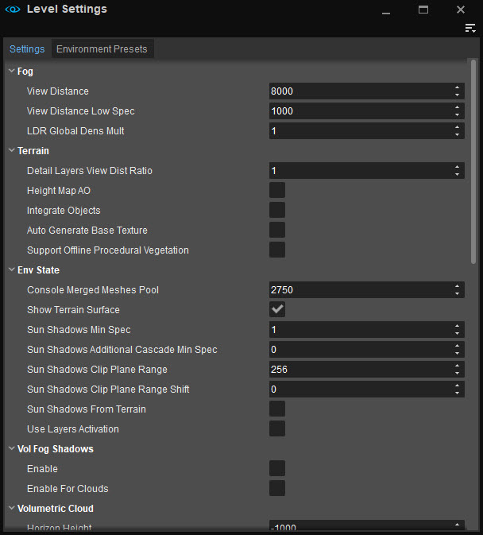
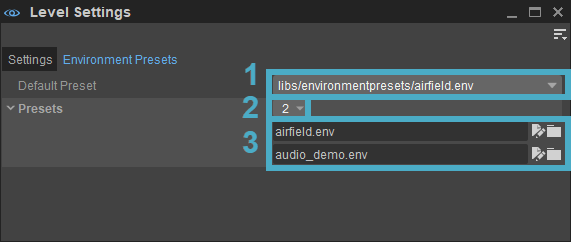

Overview
On the Level Settings panel, the global settings like ocean animation, position and size of the moon and several wind settings for the level can be set. In addition to these generic settings, Environment Presets tab, which can be used to track and modify the environment effects, can be found here.
Some of these override the settings in the Environment Editor.
The Level Settings panel can be found under Tools → Level Editor → Level Settings. It consists of two different tabs:

Level Settings
Menu
Can be accessed via the 
File
| Option | Description |
|---|---|
| Import Settings | Saves the current values on the Settings panel to the designated location. |
| Export Settings | Loads the values for the Settings panel that were previously saved. |
Toolbars
Option | Description | ||||
|---|---|---|---|---|---|
Customize... | Opens the toolbar customization window allowing users to customize existing toolbars, and/or create new toolbars within this tool. | ||||
Lock Toolbars | When disabled, the positions of toolbars and spacers within this tool can be changed by drag and drop. | ||||
Spacers | The following options allow users to use spacers in positioning their toolbars.
The Spacers menu options are only available when Toolbars → Lock Toolbars is disabled. | ||||
| Toolbars | Lists all default and custom toolbars (if any) created for this tool, allowing users to select which toolbar they'd like to hide or display. |
When a tool has a toolbar, whether this is a default one or a custom one, the options above are also available when right-clicking in the toolbar area (only when a toolbar is already displayed).
Window
| Option | Description |
|---|---|
| Panels | Opens the Settings panel and the Environment Presets panel. |
| Reset Layout | Resets the panel layout. |
Help
Opens the documentation page for this tool.
Settings Tab
Fog
Setting | Description |
|---|---|
View Distance | The global view distance in meters can be adjusted here. Make sure it's far away to avoid clipping errors. This should never be set below 1000 as various graphical issues may occur. |
View Distance Low Spec | DEPRECATED |
LDR Global Dens Mult | DEPRECATED |
Terrain
Setting | Description | ||||||
|---|---|---|---|---|---|---|---|
Detail Layers View Dist Ratio | The terrain detail texture rendering distance ratio can be adjusted here, useful for controlling the maximum view distance of the high-detail terrain textures. Increasing this value will push out the drawing of the high-detail terrain textures at the expense of extra drawcalls. Leaving this value at 1.0 is the most cost efficient setting. | ||||||
Height Map AO | Provides an extremely efficient, yet highly approximate large-scale ambient occlusion solution for outdoor environments. For details, please refer to Height Map Based Ambient Occlusion. | ||||||
Integrate Objects | Enables the objects to be marked to become part of the terrain mesh. This dramatically extends possibilities of current terrain editing tools, allowing a much higher level of detail, overhands and terrain over the objects and great flexibility. The object meshes are copied at an early stage into heightmap mesh and become a seamless part of terrain mesh supporting most of the heightmap properties, for example, 3D terrain materials. In the Properties of the object, the object needs to be integrated into the terrain; choose the option GI and Usage Mode - Integrate into Terrain to make this happen. There is also a CVar related to integrating objects:
| ||||||
Auto Generate Base Texture | If enabled while painting terrain layers, this option automatically updates the base texture using the terrain material's diffuse texture. | ||||||
Support Offline Procedural Vegetation | Allows exporting procedural vegetation as normal permanent vegetation objects. This option solves problems like missing objects on dedicated servers and incomplete AI navmesh. It procedurally distributes not only small detailed objects but also full-size trees, allowing users to create fully procedural massive forests. To mark which vegetation should be exported, select the vegetation asset in the Vegetation Editor, go to its Properties and tick the Offline Procedural checkbox. For more information about the Offline Procedural option, please refer to the Vegetation Editor page. |
Env State
Setting | Description |
|---|---|
Console Merged Meshes Pool | Configures memory pool size per level in order to easily decrease memory footprint on levels which don't need large pool size. |
Show Terrain Surface | Shows or hides the terrain surface. If no terrain is used, this can be turned off to improve performance. |
Sun Shadows Min Spec | Specifies the minimum system spec that should start casting sun shadows. |
Sun Shadows Additional Cascade Min Spec | Specifies the minimum system spec that allows the rendering of an additional sun shadow map cascade, for higher shadow view distance. |
Sun Shadows Clip Plane Range | Defines the distance between shadow frustum near and far planes; i.e. every shadow caster and receiver is included in this range. The larger the range, however, the less the depth resolution would be; causing more artifacts where shadow casting and receiving surfaces are very close. |
Sun Shadows Clip Plane Range Shift | Shadow frustum near and far planes are usually placed somewhere around the viewer camera. This option allows users to shift the entire range towards the sun or away. It is especially useful when more casters are expected below or above the view frustum. |
Sun Shadows from Terrain | Enables the sun shadows from the terrain. |
Use Layers Activation | This option allows the level to take advantage of the layers system. Switching this option on and off is done by the layer activation Flow Graph node which can be found under: Engine\LayerSwitch in Flow Graph Nodes list. |
Vol Fog Shadows
Volumetric Fog values can be tweaked in the Environment Editor. For more information about Volumetric Fog, please refer to the Volumetric Fog section.
Setting | Description |
|---|---|
Enable | Enables volumetric fog shadows from global fog. |
Enable for Clouds | Enables volumetric fog shadows from cloud shadow texture. |
Volumetric Cloud
Procedural Volumetric Cloud is the feature to render dynamic clouds in real-time. Clouds are procedurally generated by a combination of noise function or volume textures artists create.
Setting | Description |
|---|---|
Horizon Height | Adjusts the height of the horizon. Clouds below the horizon line aren't rendered, making the rendering of clouds faster. |
Max Viewable Distance | Adjusts the maximum distance of rendering clouds. |
Max Ray March Distance | Adjusts the maximum distance of ray-marching in clouds. |
Shading LOD | Adjusts the threshold of switching cloud shading to use a coarse shadow map when cloud alpha is under the threshold. |
Shadow Tiling Size | Adjusts the region covered by cloud shadow map generated internally. |
Max Global Cloud Density | Adjusts the maximum density of clouds. |
Global Cloud Noise Volume Texture | Lets users add/select a texture to be used in the the global cloud noise volume. |
Global Cloud Noise Scale | Adjusts the size scale factor for global cloud shape noise. |
Edge Turbulence Noise Volume Texture | Lets users add/select a texture that will be used in the edge turbulence noise of the clouds. |
Edge Turbulence Noise Scale | Adjusts the size scale factor for edge turbulence noise. |
Edge Turbulence Noise Erode | Enables cloud's edge eroding turbulence noise, i.e. erodes the edges of cloud volumes. If disabled, the cloud density is accumulated. |
Edge Turbulence Noise Absolute | When set to true, converts all negative turbulence noise values to positive. |
Cloud Volume Texture | Specifies the 3D texture which stores the cloud's density at each voxel. This can be used if the exact cloud shape is to be defined. |
Tiling Size | Adjusts the size of Cloud volume texture. |
Tiling Offset | Adjusts the offset of clouds. |
Remap Cloud Density Min | Remaps the density range of Cloud volume texture. Min value is mapped to 0. |
Remap Cloud Density Max | Remaps the density range of Cloud volume texture. Max value is mapped to 1. |
Additional Noise Intensity | Adjusts the intensity of cloud shape noise added to Cloud volume texture. |
Ocean
Define the ocean material to use within this level & also set up the water caustics depth, intensity, and tiling.
Setting | Description |
|---|---|
Material | Assigns a material to the ocean. If no material is assigned, the ocean cannot be rendered. |
Caustic Depth | The depth in meters that caustics will be visible for in the water. |
Caustic Intensity | Defines the multiplier to be applied to the caustics highlights. |
Caustics Tiling | Defines the caustics pattern tiling multiplier. |
Ocean Animation
The options that can be found under this section can be used to apply further adjustments to the ocean material. These values will change the effect of the flow direction on the ocean material.
Setting | Description |
|---|---|
Wind Direction | Changes the direction of the flow in the detail normals of the ocean material. |
Wind Speed | Changes the speed of the flow in the detail normals of the ocean material. |
Waves Amount | Changes how many waves there are on the ocean. |
Waves Size | Changes the size of the waves on the ocean. |
Dyn Tex Source
Setting | Description |
|---|---|
Width | Allows per-level override for the size of shared render target for Flash materials. |
Height | Allows per-level override for the size of shared render target for Flash materials. |
Environment Presets Tab

The Environment Presets tab is used to manage the list of environment assets that have been introduced to a level. Setting an environment asset as default, by either dragging and dropping it into the Viewport from the Asset browser or choosing the Set as Default for this Level option on the context menu, adds the selected asset to the Presets List.
Even though multiple environment assets can be added to the Presets List, only one can be displayed on the Viewport at a time.
There are three main fields on the Environment Presets tab:
1. Default Preset
Displays the environment assets that are introduced to the level. Choosing an environment asset on the Default Preset list sets that asset as default. This list includes all the environment assets that are introduced to the level; however, only one asset can be set as default at a time. Choosing a different asset would also change the environment parameters and display the outcome on the Viewport.
2. Presets Dropdown Menu
Users can add/remove environment assets by clicking or right-clicking on the Presets Dropdown Menu icon and choosing either Insert or Add depending on where the new environment asset should be placed on the list. This adds a new field in the Presets list allowing users to choose from existing environment assets by clicking on the Browse button.
3. Presets List
To choose an existing environment asset, right-click on the new field and choose Pick Resource... or click on the browse icon next to the name field. It is also possible to edit the selected environment asset by clicking on the edit button.
To remove the assets from the list, right-click choose Remove All on the Presets Dropdown Menu.